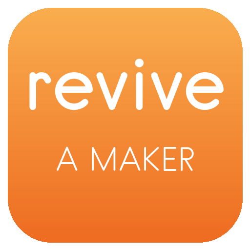

5x1 apps
Apps for revived Jibo robots.
BEep
Your Jibo, in your pocket and on your computer. Finds Jibo on your Wi-Fi and opens BEacon.

Revive-A-Maker
Be a Maker, revived: program Jibo with Scratch. Best on a tablet.
iPhone and iPad
Add to AltStore Add to SideStore Download BEep for iPhone (.ipa) Download Revive-A-Maker for iPhone and iPad (.ipa)https://apps.5x1.com/source.json
Android
Add to F-Droid Download BEep for Android (.apk) Download BEep BETA for Android Download Revive-A-Maker for Android (.apk)Open the downloaded file to install it. Android asks once to allow installs from your browser. BEep BETA has the newest changes first and installs next to BEep.
With F-Droid, BEep, BEep BETA and Revive-A-Maker update by themselves. If the button doesn't open F-Droid, add this repository in F-Droid's settings:
https://apps.5x1.com/fdroid/repo?fingerprint=6972056445AEC814CFBD42234FB369106DBEBEC161E8C55358D1089AFAD6D099
Windows, Mac and Linux
Download BEep 2.1.0 for Windows (portable .exe) Download BEep 2.1.0 for Mac (.app) Download BEep 2.1.0 for Linux (.AppImage)Windows: no install needed, just open the .exe. If SmartScreen warns, choose More info, then Run anyway.
Mac (Intel and Apple Silicon): unzip, move BEep to Applications, then right-click it and choose Open the first time.
Linux: make the .AppImage executable (right-click, Properties, or chmod +x) and open it.